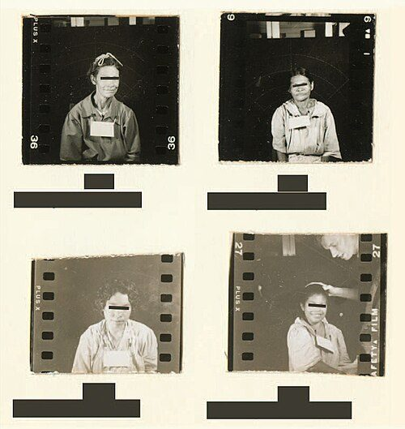

FILE GUATEMALA/STI/EXPERIMENTS // 1946–1948
Guatemala Sexually Transmitted Infection Experiments
U.S.-sponsored researchers deliberately exposed people in Guatemala to STIs without adequate consent. This differs from Tuskegee, where researchers observed existing infection rather than inoculating participants.


CASE ANALYSIS
What the record supports
CLAIM AND BOUNDARY
U.S. Public Health Service researchers, with Guatemalan partners, deliberately exposed people to sexually transmitted infections in 1946–48. Many were not adequately informed or treated. The 2010 bioethics commission confirmed the research. This differs from Tuskegee, whose participants had infection before enrollment.
CHRONOLOGY AND CONTEXT
Researchers studied penicillin prevention and treatment among prisoners, soldiers, and psychiatric patients. They used infected sex workers and direct inoculation. Records describe roughly 1,300 people exposed, with fewer documented as treated; totals depend on definitions. The project ended in 1948 and surfaced publicly after archival research decades later.
DOCUMENTARY EVIDENCE
The 2011 Presidential Commission report, Public Health Service correspondence, and NIH archive document exposure methods and consent failures. The commission found serious ethical violations but could not establish treatment for every exposed person. U.S. and Guatemalan officials later apologized. The archive is stronger on program design than individual outcomes.
CONTRARY EVIDENCE AND ALTERNATIVES
Officials framed the work as research to prevent disease, and some participants received treatment. That purpose cannot justify nonconsensual exposure. Some participants were already infected, while others were deliberately exposed; categories must be distinguished rather than treating the entire study pool as identical.
UNCERTAINTY
Clinical records are incomplete, and exact numbers infected, treated, or followed are uncertain. The commission found no reliable evidence that experiments caused deaths, but could not rule out harm. This uncertainty supports neither mass-death claims nor assurance that no participant suffered.
CALIBRATED ASSESSMENT
The Guatemala experiments are documented research violations involving deliberate exposure without consent. They should not be conflated with Tuskegee or used to imply Tuskegee involved inoculation. Core ethical facts are established even as individual consequences and totals remain uncertain.
WHAT WOULD CHANGE THIS
Full clinical records and family testimony could clarify exposure and outcomes. A particular death claim requires diagnosis and causation. New sources may revise totals, but no additional evidence is needed to establish the unethical nature of documented procedures.
DOCUMENT TRAIL
Sources & limitations
- Presidential Bioethics Commission, Guatemala reportOfficial commission report details experiments and ethical failures while noting record gaps.
- NIH, apology and study historyGovernment summary confirms deliberate inoculation; consult the commission report for evidentiary caveats.
- CDC, Tuskegee historyComparison source clarifies the distinction between observation and Guatemala inoculation.